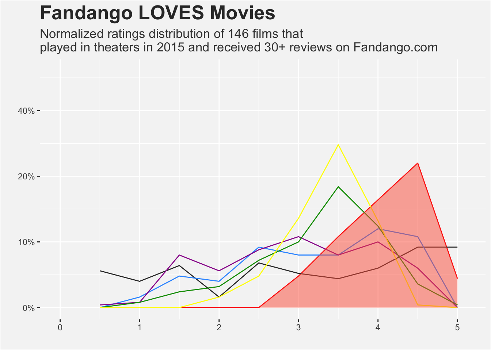

pacman::p_load(
tidyverse,
fivethirtyeight,
rvest,
httr,
janitor
)Web Extraction
Introduction
In this project, I will work with online sources to recreate already produced data as a challenge. I will demonstrate my ability in data extraction, cleaning, and visualization.
Movie Data
538 is a website that focuses on opinion poll analysis, politics, economics, and sports blogging. It was created and is currently run by Nate Silver, who has become famous for his writing and work on the site. I found this interesting article linked here about how fandango has skewed ratings for a variety of reasons, when rating movies. Below is the recreation of the plot containing all of the critics and their ratings, along with more conclusions.
# Combined dataset
df <- merge(fandango_data, c(rt_data, rt_user_data, mc_data, mc_user_data,imdb_user_data)) %>%
select(rating, contains("_"))
df rating count_fan count_rt count_rtu count_mc count_mcu count_imdbu
1 0.5 0 14 0 1 0 0
2 1.0 0 10 4 2 2 0
3 1.5 0 16 12 20 6 0
4 2.0 0 4 10 14 8 4
5 2.5 0 17 23 22 18 12
6 3.0 12 13 20 27 25 34
7 3.5 27 11 20 20 46 62
8 4.0 41 15 30 25 31 33
9 4.5 55 23 27 15 9 1
10 5.0 11 23 0 0 1 0# Final Plot
df %>% ggplot(aes(x = rating, y = count_fan)) +
geom_line(color = "red") + # fandango
geom_line(aes(x = rating, y = count_rt), color = "#333333") + # RT
geom_line(aes(x = rating, y = count_rtu), color = "#3399FF") + # RT Users
geom_line(aes(x = rating, y = count_mc), color = "#990099") + # MC
geom_line(aes(x = rating, y = count_mcu), color = "#009900") + # MC Users
geom_line(aes(x = rating, y = count_imdbu), color = "#FFFF00") + # IMDb Users
geom_area(fill = "tomato", alpha = .5) +
scale_x_continuous(limits = c(0,5.1),
breaks = seq(0,5,1)) +
scale_y_continuous(limits = c(0,90),
labels = scales::percent_format(scale = .5,
accuracy = 10)) +
labs(title = "Fandango LOVES Movies",
subtitle = "Normalized ratings distribution of 146 films that \nplayed in theaters in 2015 and received 30+ reviews on Fandango.com",
y = " ",
x = " ") +
theme(panel.background = element_rect(fill = '#F5F5F5')) +
theme(plot.background = element_rect(fill = '#F5F5F5')) +
theme(plot.title = element_text(size = 20, face = 'bold', color = 'grey20')) +
theme(plot.subtitle = element_text(size = 13, color = 'grey25'))
Conclusion
HTML
IGNORE THIS PART - TO COME